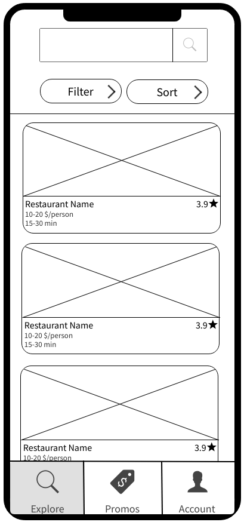
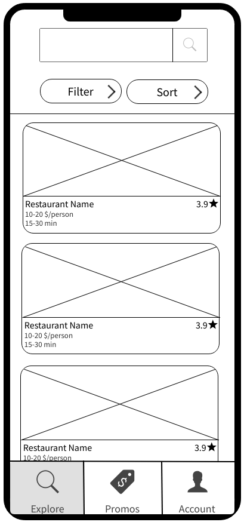
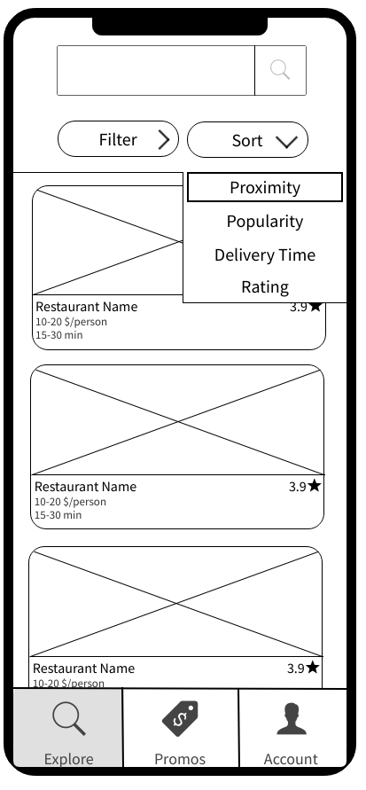
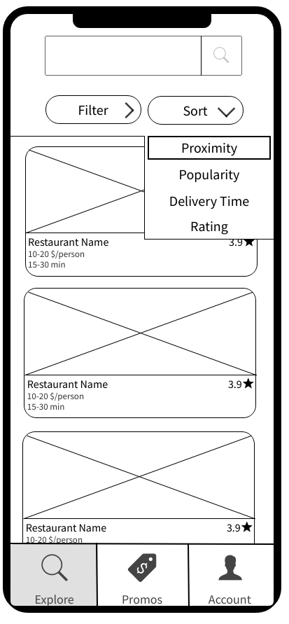
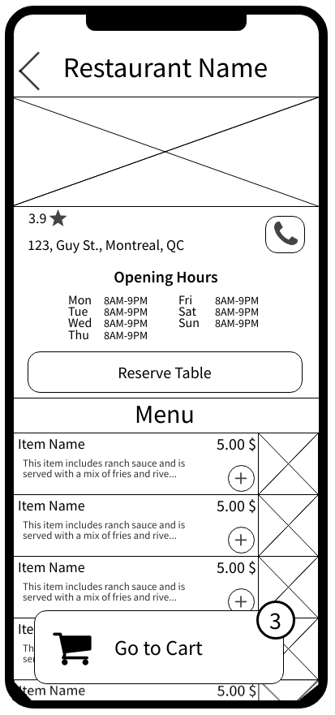
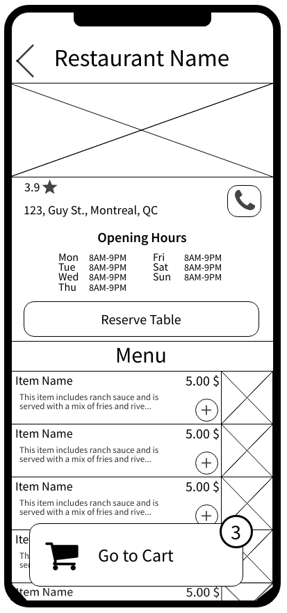

SOEN 357
Section S
Dzmitry Fiodarau, 40170728
Mehdi Chitsaz, 40132819
Dzmitry Fiodarau, 40170728
Mehdi Chitsaz, 40132819
The measures and restrictions that Quebec had to put in place in the last years to deal with the
global Covid-19 pandemic severely impacted its economy. One sector in particular that has suffered great
losses is the food services.
Local restaurants had to quickly adapt to constant shutdowns and re-openings if they wanted to survive
through this crisis. This is why now more than ever it is important to help these businesses to recover. To
increase their revenue and lower the consequences of high inflation they need to maximize their
accessibility and their visibility among the population. Even if some apps already exist which allow people
to discover restaurants around them, these apps have multiple shortcomings. Most of these shortfalls are due
to the fact that such applications are owned by big corporations whose primary goal is to make profit for
themselves. This negatively impacts the UI of the application and limits the features offered.
To help local restaurants recover from the difficulties of the past few years, we decided to design a mobile
application. Its goal is to let people of Quebec discover restaurants around them in a similar way to Uber
Eats, DoorDash, and SkipTheDishes. However, our application focuses only on local restaurants which means
franchised restaurants are excluded from it.
The way that we decided to support local businesses through our application is by maximizing the clientele
for them. This means that during the whole design process the client was considered as the main target
audience. Designing with this target audience in mind allows us to have a final product that is practical,
simple, and appealing to use. If those are all qualities our product has, there should be more people
ordering from and reserving tables at local restaurants which should help them get through the rough patch.
There already exist multiple applications that allow customers to explore restaurants near them and directly
choose between the delivery or pickup options. The most popular ones share a lot of similarities in their
design and in the features that they offer. This also means that they share some shortcomings which mostly
come from the fact that their primary focus is to generate profit for themselves. The following table
captures the analysis of the three biggest food apps used in Quebec: Uber Eats, DoorDash, and SkipTheDishes.
| Features | |
|---|---|
|
|
| Strengths | Shortcomings |
|
|
Survey Questions
As was mentioned previously, our target audience is the clientele because we want to increase their numbers to help the local restaurants. This is why designing for the user experience of people looking to order some food or reserve a table at a restaurant is our main goal. To get a better understanding of those who will use our application from the point of view of the buyer, we created three user personas.
Leila is living through a very stressful period of her life. She has a lot on her plate and this is why sometimes, she lacks motivation to get things done. Exploring local restaurants new to her is something that she enjoys, so ordering food through our application would be considered as a treat to her. This is a good way she found to motivate herself to work hard on her classes. It is important to keep in mind that health is important to her, so she is always looking for healthy food options in the menus. It is also relevant to think about the fact that she is still a student which means she probably does not have a lot of money. So, the Promotions tab of EatAround is something she finds very useful.

Liam is a young professional who is very driven by his job. Success is his most important goal, but because of that he often lacks time for things other than his work. He represents the target audience that does not have time to cook but has more than enough resources to order food daily. Speed and efficiency are the things Liam is looking for when he orders food, so the filtering and sorting features of EatAround is something he is expected to use very much.
Robert is playful and spontaneous, but the thing he values most in his life is his family. He tries to constantly put effort into his marriage because he does not want it to become boring and monotonous. To keep some spark between him and his wife, he often organizes surprise dates for her. The EatAround application is interesting to him because it gives him the opportunity to see cute, local restaurants around him and reserve a table right away at the spot he chooses. His curious nature and his goal to keep his wife happy is what drives him to use EatAround.
After the insights into what type of people will use our application and what they will feel while doing it, we needed to start thinking of how our application will work. We decided to use a user flowchart to get an idea of what the flow of EatAround will be. This is why we included all actions that can be performed by the user at different stages of the application use. This flowchart gives an initial structure to our application and even helps figure out some conditions that we will have to verify for some of its pages.

First, to get an idea of how the application will be structured and what content will go where
we made some sketches. This is a low-fidelity prototype to which changes were easy to make. This allowed us
to brainstorm as we were drawing them.
Here we have sketches for the registration page with the cellphone number and the explore page with two
of its features, filtering and sorting:


Here we have sketches for the Promotions and My Account tabs along with the adding a payment feature and tracking your order feature:

Here we have sketches for the reservation of a table at a restaurant feature:

Here we have the sketches for the reservation's details page along with the different pages that allow a customer to order a delivery:


With our sketches we tried to make the application as consistent and as intuitive as we could. All buttons
that allow to progress in a sequence are placed at the bottom with an arrow pointing to the right. We still
kept in mind to allow the user to go back in his steps if he ever wants to change something or make sure he
entered the right thing. The button for this 'Go Back' feature is placed in all of the sketches at the top
with an arrow pointing to the left.
We also tried to use many icons in our sketches in addition to the written text that helps the user
understand what each button does. Having the text and the icon decreases the chances that the user's
expectations of a button's functionality are not in accordance with what the button actually does.
These skectches represent the initial design we had for our application, but in the following steps there
were some improvements made.
 

 



 



The color palette we chose for our application consists of only three colors: black, white, and a specific shade of blue.


The reason behind this simple color palette comes from one of the strengths we observed in applications
similar to our own. The colors used by big food delivery applications are mostly limited to three or four
colors. This avoids overwhelming the user and keeps all of the user's attention on beautiful pictures
restaurants choose to represent themselves. As our main goal is to encourage people to discover local
restaurants around them, we want to keep their focus on what these restaurants have to offer.
Another reason behind this color palette is to give a professional look to the application. Local
restaurants are rarely perceived as professional by the average user, so we wanted to shift this negative
perception. Even if most of the local restaurants are relatively small and do not have as much resources as
some big chain restaurants, the quality of their food and the experience they can make you live are even
better.
To be consistent with the professional look we wanted to give to EatAround, we chose ‘Roboto’ as the main font. It is easy to read which is important so that the user does not get confused and it has a strength to it which gives the user a feeling of reliability.

In EatAround, we decided to use many icons in addition to the visual text a person can read to make the interface more intuitive and appealing. Most of the icons were chosen to have soft/rounded edges to make it consistent with the rest of the app. In other words, most of the icons are used as buttons and buttons that are not icons all have rounded edges in the application. This was a choice made to avoid the application being perceived as too aggressive.